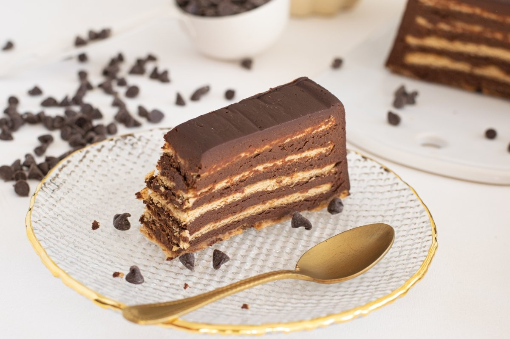

Tarta de galletas
"Esta es una tarta tipica familiar muy conocida en España, la cual siempre se suele comer en cumpleaños, bodas, bautizos, ..."

Ingredientes
- 200 g de chocolate negro
- 100 ml de nata para montar
- 2 sobres de preparado para flan
- 1 l sobre de leche + 100 ml para mojar las galletas
- 3 cucharadas de azúcar
- 450 g de galletas tostadas rectangulares
Preparación
- Disolver el preparado de flan en un vaso de leche y pon el resto en un cazo al fuego a calentar con el azúcar. Cuando rompa a hervir retirar del fuego y añadir la leche con el preparado de flan. Remover.
- Vuelve a colocar a fuego bajo y remueve continuamente hasta que empiece a espesar.
- Colocar, en un molde rectangular, una primera capa de galletas mojadas en la leche. La tarta de galletas de la abuela está a punto.
- Verter la mitad del flan y colocar otra capa de galleta. Verter la otra mitad del flan y poner una última capa de galletas. Dejar enfría en la nevera mínimo 1 hora.
- Poner la nata a calentar y cuando empiece a hervir retirar del fuego y añadir el chocolate. Remover hasta que esté fundido y verter por encima de la última capa de galletas.
- Dejar enfriar hasta que el pastel de la abuela esté cuajada, unos 30 minutos.
Información nutricional
- Esta receta me aporta...
- 304 Kcal/Ración
- Grasas 144 Kcal 16 gr. 47%
- Hidratos 136 Kcal 34 gr. 44%
- Proteínas 20 Kcal 5 gr. 9%
- Información nutricional adicional por ración:
- Azúcares 21 gr
- Grasas saturadas 9 gr
- Fibra 2 gr
- Sal 0,25 gr